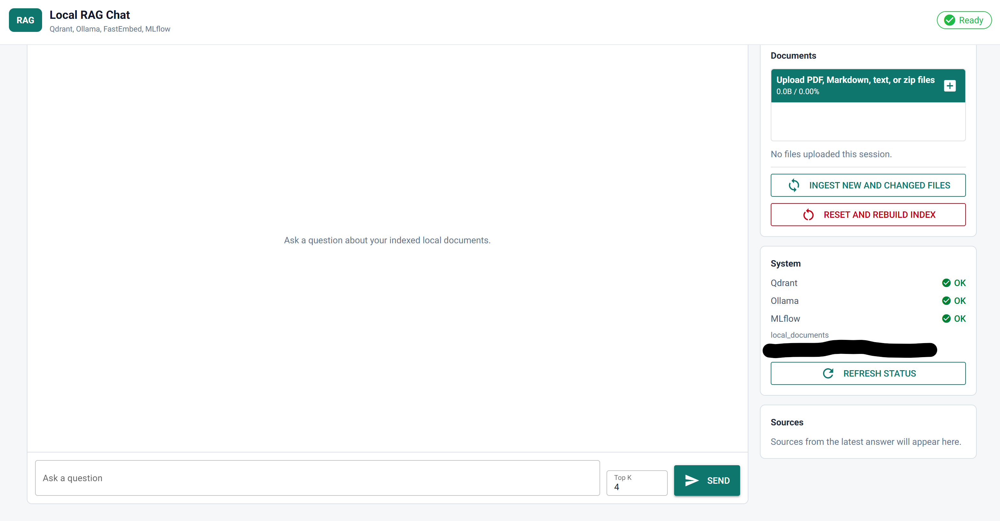

AI + Retrieval
Local RAG Chat
A local retrieval-augmented generation service for asking questions over private documents. The app parses PDFs, Markdown, text files, and zip uploads; chunks and embeds content locally; stores searchable vectors in Qdrant; and answers with a local Ollama model.
Built with a FastAPI backend and NiceGUI browser UI, plus MLflow tracing for ingestion, retrieval, prompt assembly, and chat calls. I host the MLflow tracking server and Qdrant database on my own private server, with access routed through my tailnet. GPU-backed FastEmbed support keeps indexing local while preserving visibility into model, prompt, retrieval, and source metadata.
